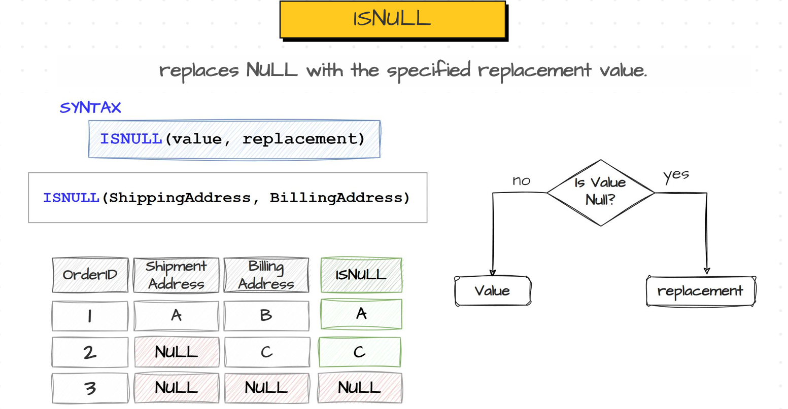
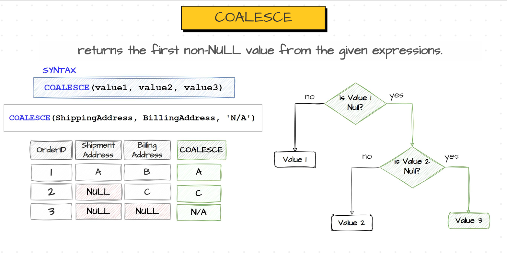
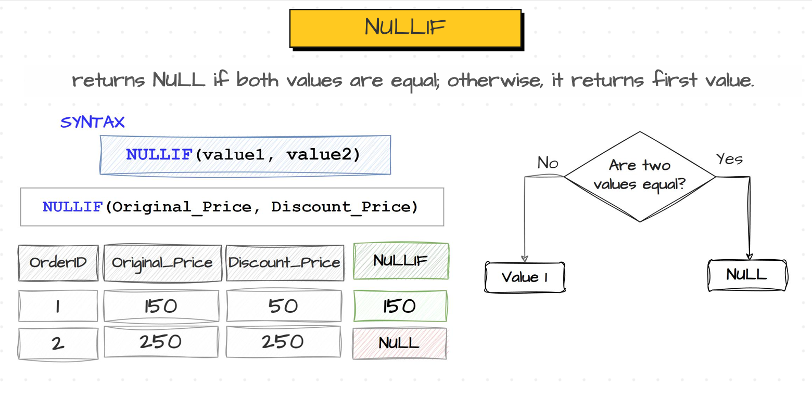
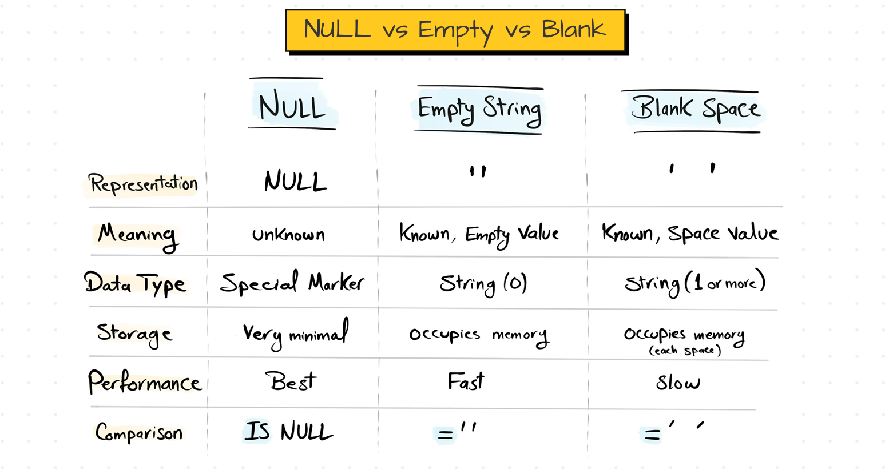

NULL Functions#
Introduction to NULLs#
In SQL, NULL means Nothing or Unknown which means that value is not known to anyone or it doesn’t have any value.
NULL is not equal to anything. It is not zero or empty string or blank space.
NULLS are usually generated when that field has no value or if the person who are filling that field doesn’t know that value. For example, consider a form where we have fill, firstname, middlename and lastname. In this form middlename is optional. So people might have middle name and some people might not. So people who has middle name they fill that field and other leave it as blank. If people leave any field as blank, then it is stored as NULL in the databases.
To handle these NULL values , SQL provides few functions which as ISNULL(), COALESC(), NULLIF(), IS NULL, IS NOT NULL. ISNULL(), COALSEC() functions ar eused to substitute NULL Values with any constant value. NULLIF() function is used to substitute any constant literal with NULL value. IS NULL, IS NOT NULL is used to check whether a literal is NULL or not.
ISNULL() and COALESCE() Functions#
ISNULL() and COALESCE() Functions are used to substitute NULL values with a specified replacement value whether it would be a static value or column or field.
ISNULL() : ISNULL() Function replaces NULL with specified replacement value. The syntax of ISNULL() function is
ISNULL(value,replacement). ISNULL() function first checks whethervalueis NULL or not. If it is not NULL then this function keeps that value as it is, otherwise it substitue that NULL value with the replacement. For example considerISNULL(shippingAddress, BillingAddress). If any customers shippingAddress is NULL then ISNULL() function replaces that shipping address with BillingAddress otherwise it keeps the shippingAddress as it is. We can keep the replacement as static value such asN/AorUnknownetc. The main problem with ISNULL() function is, it doesn’t guarentte that it would remove all the NULL values in a column. Because in above example, we said if shippingAddress of customer is NULL, then ISNULL() function substitute that NULL value with customers BillingAddress. What If that BillingAddress is also NULL. If BillingAddress is also NULL then ISNULL() can’t do anything, it just put NULL value from BillingAddress to shippingAddress. To overcome this issue, we have anothor function which is COALESCE().
ISNULL FunctionCOALESCE() : COALESCE() function returns the first non NULL from the given set of values or expressions. The syntax of COALESCE() is
COALESCE(value1,value2,value3,...). It first checks whether value1 is NULL or not. If it is NULL then it checks value2 is NULL or not. If value2 is not NULL then it replaces value1 with value2. If value2 is also NULL then it checks the value3. If it is Not NULL then COALESCE() function replaces value1 with value3 and this decision goes on for all values given to the function. For exampleCOALESCE(shippingAddress, billingAddress, 'N/A'). In this example if shippingAddress is NULL then it checks billingAddress. If billingAddress is not NULL , then shippingAddress is replaced with billingAddress. If billingAddress is also NULL, then COALESCE() moves to 3rd value which is static value here i.eN/A. So it replaces the shippingAddress withN/A.
COALESCE FunctionSo if we see, ISNULL() function is limited for two values and COALESCE() function can take unlimited values. ISNULL() function is fast when compared to COALESCE(), as decision making for COALESCE() takes time. ISNULL() function is different in different databases. In SQL Server, it is ISNULL(), in Oracle it is NVL, in MySQL it is IFNULL(). But COALESCE() is available in all the databases.
Usecases of ISNULL() and COALESCE() Functions#
Data Aggregations : Before performing any aggregation on any columns, we have to handle the NULL Values first. Suppose consider a football team management want to calculate the Avg no of goals that each player is scored in all the games in a tournament. So the management applied AVG() for each player goals across all the games. But if you see there might be a scenario where a player hasn’t kick a goal in a game. Unfortunately it is stored as NULL instead of 0. If you doesn’t habdle this NULL and applied AVG() function then it doesn’t includes that NULL value and computes average for all other rows resulting high average than usual average for that player. So we get incorrect results in this case. So we have to replace those NULL values with 0 before performing aggregations. So here we need to use COALESCE() function to replace NULL value with zero.
SELECT playerID, playerName, AVG(COALESCE(goals,0)) FROM tournament
Mathematical Operations : We need to handle the NULL values before performing any mathematical operations such as addition, subtraction, multiplication etc. Because if there are any NULL values in a row and we performing addition operation with coresponding row then it would return NULL. For example
5 + NULLresults NULL. Similarly'Tom' + NULLresults NULL. So we need to replace these NULL with approriate dummy values before performing mathematical operations.Ex : Display the fullname of the customer by merging the firstname and lastname and give 10 bonus reward points to each customer (as festival is approaching).
SELECT CustomerID, firstname, lastname, firstname + ' ' + COALESCE(lastname,'') as FullName, COALESC(score,0) + 10 as FestivalScore FROM Sales.Customers
Joining Data : We need to handle NULLs before performing joins between two tables. Suppose if we have NULLs in your both join keys of two tables and when sql starts joining those two tables with those two join keys then SQL might exclude those rows which are having NULLs as SQL doesn’t able to compare NULLs with equal to symbol (as NULLs doesn’t show a value). So if you perform joins between two tables where key columns have NULLs then we might miss some rows in the resultant join. So we need to handle those NULLs before joining the tables.
Ex : Consider two tables where first table has orders of a type of a product for each year with schema as Orders(year, type, orders). Second tables has sales for each type in each year with schema as Sales(year, type, Sales). Now there are some NULLs in type column in both orders and sales tables. But we want to join those two tables now. But we doesn’t what type it might be. So we cannot able to put a constant value inplace of NULL. If we join with handling those NULLs, we might lose those records having NULLs in result. So we can use ISNULL() or COALESCE() function handle these situation.
SELECT year, type, orders, sales FROM Orders as o INNER JOIN Sales as s ON o.year = s.year AND ISNULL(o.type,'') = ISNULL(s.type,'')
As we cannot compare NULL’s using equal to symbol, we can avoid comparing NULLs by using equal to symbol. Here it replaces with empty string instead of NULL perform comparisions. But in output it displays NULLs itself as we are just changing its value for comparision purpose itself instead of substituting it with empty string permenently in the database. This is how we handle NULLs before performing joins.
Sorting Data : We have handle NULLs in a column before sorting the data based on the same column which has NULLs. Because SQL keeps NULL values at the top if we sort the data from Lowest to Highest and keeps NULLs at last if you sort the data from highest to lowest. But usually we doesn’t want to see NULL values at the top if we sort the data from lowest to highest. So to overcome this we use ISNULL() or COALESCE() functions to keep NULLs at the bottom of the table eventhough we sort the table from lowest to highest.
Ex : Sort the scores of customers from lowest to highest by keeping NULLs at the last.
We can solve this in 2 ways
SELECT CustomerID, Score FROM Sales.Customers ORDER BY ISNULL(Score, (SELECT MAX(Score) FROM Sales.Customers) + 1)
SELECT CustomerID, Score, FROM Sales.Customers ORDER BY CASE WHEN Score IS NULL THEN 1 ELSE 0 END ASC, Score ASC
NULLIF() Function#
NULLIF() function is quite opposite to ISNULL() and COALESCE() functions as it returns NULL if provided two values are equal otherwise it returns value1 as output.
The syntax of NULLIF() is
NULLIF(value1,value2).Ex : Consider this
NULLIF(price,-1)-> It would replace price with NULL if any products price is equal to -1.
NULLIF FunctionEx : This NULLIF() function is quite more useful when there is a situation that we might ecnounter division by zero error. Consider this example. Find the price of each order based on its sales and quantity.
SELECT OrderID, Sales, Quantity, Sales / NULLIF(Quantity,0) as Price FROM Sales.Orders
IS NULL and IS NOT NULL#
IS NULL and IS NOT NULL Keywords are used to check whether an expression or an value is NULL or Not. IS NULL keyword returns TRUE if the value is NULL else it returns False. Similarly IS NOT NULL keyword returns TRUE if value is not NULL else it returns TRUE.
Syntax of both keywords are :
<value or expression> IS NULL,<value or expression> IS NOT NULLThe main usecase of these keywords are the following ones.
Data Filtering : IS NULL or IS NOT NULL keywords are used to filter the data in the databases.For example, List all the customers whose scores are NULL.
SELECT CustomerID, firstname, lastname FROM Sales.Customers WHERE Score IS NULL
Anti Joins : IS NULL and IS NOT NULL keywords are used to perform anti joins which we have seen in the combining data section. For example list out the customers who haven’t placed any order yet.
SELECT c.CustomerID, c.firstname, c.lastname FROM Sales.Customers as c LEFT JOIN on Sales.Orders as o ON c.CustomerId = o.CustomerId WHERE o.OrderId IS NULL
NULL vs EMPTY vs BLANK#
NULL in SQL means nothing which means it is unknown and we doesn’t know anything about that value. EMPTY means it is known and a string with 0 charecters. Whereas BLANK means it is stirng containing one or more Blank spaces.
But there is performance difference between all these types. The performance of NULL is far better when compared to EMPTY and BLANK because the storage of NULLs are very minimal.
The quick comparision between these three types are :

NULL vs EMPTY vs BLANKWe might think that why we need to understand the difference between these 3 types. There is a reason for it because in many scenarios, the data coming from the source systems would be messy and contains all these types such as NULLs, EMPTY and BLANK spaces etc. We need to clean these messy data before performing any analytics. If you dont do these cleanups then organizations definetly makes wrong decisions as they got incorrect reports.
So before going to perform the analytical tasks, we have to do the data cleans which involves these three types also.
So, we need to make data policies before perfoming these cleanup tasks. I mean in most of the scenarios BLANK SPACES doesn’t have any meaning. So we can make a policy that remove all the BLANK SPACES and keep only NULLS and EMPTY Strings.
Policy1 : Only use NULLs and EMPTY strings, but avoid BLANK spaces. To achove this we use TRIM() function on the column which has BLANK spaces, so that it makes those BLANK spaces as empty strings.
But in many scenarios those empty strings are also makes no sense they might have no meaning. So they might be similar to NULLs. In these sceniaros, we can make those empty strings as NULLs.
Policy2 : Only use NULLs and avoid using empty strings and blank spaces. To achieve this we first TRIM() those blank spaces to make them as empty strings and use NULLIF() to replace those empty strings with NULLs. So syntax is
NULLIF(TRIM(<column_name>),'')But NULLs looks akward when we are generating reports which means they doesn’t look good when we are presenting data to users. So we usally replace those values with a default value such as
N/AorUnknown.Policy3 : Use default value
Unknownand avoid NULLs, EMPTY strings and BLANK spaces. To achieve this we use COLAESCE() function on top of the above NULLIF() function to replaces all NULLs with default valueUnknown. The syntax isCOALESCE(NULLIF(TRIM(<column_name>),''),'Unknown').Sometimes we use policy2 and sometimes we use policy3. We use data policy2 which is replacing empty strings and blank spaces with null values, during data preperation before inserting into database to optimize storage and performance. We use data policy3 which is replacing empty strings, blank spaces, NULL values with default value, during data preperation before using it in reporting to improve readability and reduce confusion.